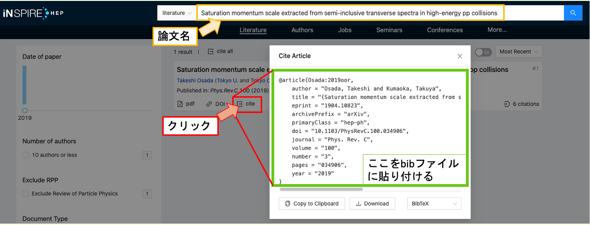

TeX Kumaoka Template
本ページの内容を多く含んだフォーマットを用意したので， 必要があれば使ってください． ( https://github.com/11kumaoka/KumaTeXFormat ) paperディレクトリーは一応修論仕様にしてあります. 本ページに書いてある\newcommandやハイパーリンク, bibTex, ディレクトリ分け等をしてあるので， 自身で1から作るより楽になるかと思います.
git clone ssh://git@gitlab.cern.ch:7999/tkumaoka/texformat.git
使い方 各内容ごとにディレクトリ分けがされています． 図はfigディレクトリに, 内容はContentsディレクトリーに入れましょう. 編集中の内容以外は, main.texの\inport{内容ファイル}の部分をコメントアウトすることで 処理が速くなります． 参考文献(bibTeX)の有効化は本ページの内容を参考にしてください．
Editor
VSCode
各自お好きなものを使うのが良いですが, 個人的なお勧めはVSCode. (詳細説明ページ) 単純にはMacの場合terminalに"brew install mactex-no-gui --cask"と打ち込み, VScodeのLaTeX Workshopの拡張機能を入れるだけ.
Overleaf
ただ初めて使うなら設定等がいらないOverleafが良いかもしれません. ブラウザで編集できインストールなどの環境設定が入らないため, 初心者でもすぐに使えます. また複数人で編集できるのが特徴です．そのためコメント等も貰い易いかと(ただ進捗は全て把握されるので注意). Overleafの場合は有料でないとgitとつなげることができず, Overleafのサーバーが落ちているとその間編集ができなくなる問題がありますの注意. ちなみにCERNのアカウントを持っているとCERNのメールアドレスでアカウントが作れ, 有料版がただで使えます．
最低限のルール
- 数字と単位の間にスペース（LaTeXでスペースは”~”で表記）
- 言葉はローマン(ex, truth, det, gen, and etc)
- sin, log, ln, exp, tr等々もローマン
newcommand
単位等をローマン体に変え忘れることが多いので， コマンドを作りました． 自分の文章の上に貼っておけば使えます． 一応文章の中でも式の中でも使えるようにif文を使っているので, 同じように使えます． 例えば,一番上の例では\mrm{hoge}とすれば式の中外問わず"hoge"がローマンになります． よく使うであろう例として$\pt^\mrm{truth}$とか. 数式は\nEq{式}{ラベル}のように入れるとナンバリング付きの数式が入れられます． 画像はひとつ入れる場合は\figIn{画像ディレクトリ}{サイズ}{キャプション}{ラベル}のように引数を入れると入れられます． 画像を横に2つ並べる場合は引数8つで\dFigIn{画像ディレクトリ1}{サイズ1}{キャプション1}{ラベル1}{画像ディレクトリ2}{サイズ2}{キャプション2}{ラベル2}
\newcommand{\mrm}[1]{\ifmmode{\mathrm{#1}}\else{$\mathrm{#1}$}\fi}
\newcommand{\erm}[1]{\mathrm{#1}} % in equation
\newcommand{\trm}[1]{$\mathrm{#1}$} % in text
\newcommand{\nEq}[2]{\begin{eqnarray}#1 \label{#2} \end{eqnarray}}
\makeatletter % Set Numbering for Fig, Table, Equation for each section
\renewcommand{\thefigure}{\thesection.\arabic{figure}}
\renewcommand{\thetable}{\thesection.\arabic{table}}
\renewcommand{\theequation}{\thesection.\arabic{equation}}
\@addtoreset{figure}{section}
\@addtoreset{table}{section}
\@addtoreset{equation}{section}
\makeatother
\newcommand{\figIn}[4]{
\begin{figure}[htbp]
\centering
\includegraphics[width=#2\linewidth]{#1}\caption{#3}\label{#4}
\end{figure}
}
\newcommand{\dFigIn}[8]{
\begin{figure}[htbp]
\begin{minipage}{0.5\hsize}
\begin{center} \includegraphics[width= #2 \linewidth]{#1} \end{center} \caption{#3} \label{#4}
\end{minipage}
\begin{minipage}{0.5\hsize}
\begin{center} \includegraphics[width= #6 \linewidth]{#5} \end{center} \caption{#7} \label{#8}
\end{minipage}
\end{figure}
}
\newcommand{\duFigIn}[6]{
\begin{figure}[htbp]
\begin{minipage}{0.5\hsize}
\begin{center} \includegraphics[width= #2 \linewidth]{#1} \end{center}
\end{minipage}
\begin{minipage}{0.5\hsize}
\begin{center} \includegraphics[width= #4 \linewidth]{#3} \end{center}
\end{minipage}
\caption{#5} \label{#6}
\end{figure}
}
\newcommand{\refE}[1]{Eq.\ref{#1}}
\newcommand{\refF}[1]{Fig.\ref{#1}}
\newcommand{\refT}[1]{Table.\ref{#1}}
\newcommand{\pt}{\ifmmode{p_{\mathrm{T}}}\else{$p_{\mathrm{T}}$}\fi}
\newcommand{\cme}{\ifmmode{\sqrt{s}}\else{$\sqrt{s}$}\fi}
\newcommand{\cmeNN}{\ifmmode{\sqrt{s_{\mathrm{NN}}}}\else{$\sqrt{s_{\mathrm{NN}}}$}\fi}
\newcommand{\eV}{\ifmmode{\mathrm{eV}}\else{$\mathrm{eV}$}\fi}
\newcommand{\keV}{\ifmmode{\mathrm{keV}}\else{$\mathrm{keV}$}\fi}
\newcommand{\MeV}{\ifmmode{\mathrm{MeV}}\else{$\mathrm{MeV}$}\fi}
\newcommand{\GeV}{\ifmmode{\mathrm{GeV}}\else{$\mathrm{GeV}$}\fi}
\newcommand{\TeV}{\ifmmode{\mathrm{TeV}}\else{$\mathrm{TeV}$}\fi}
\newcommand{\raa}{\ifmmode{R_{\mathrm{AA}}}\else{$R_{\mathrm{AA}}$}\fi}
\newcommand{\red}{\textcolor{red}}
\newcommand{\blue}{\textcolor{blue}}
よく使うコマンド
- 空白 (~)
- 行間設定（マイナスも可）：TeXが勝手に行間を作った場合に潰すことができる．
- \vspace{2mm}
- コメントアウト (%)
- 行数表示 (\linenumbers) \usepackage{lineno}が必要. 人に文章を見てもらうときはつけておくと，相手はコメントしやすいです
- インデントしない \noindent
- physics pacage (いろいろ省略して描ける) \usepackage{physics} https://gitlab.cern.ch/tkumaoka/texformat
図の挿入
文字の回り込みを許した図の挿入や，二つ図を並べるやり方などの情報が有用 http://www.yamamo10.jp/~yamamoto/comp/latex/make_doc/insert_fig/index.php
箇条書き
\begin{enumerate}
\setlength{\parskip}{0cm} % 段落間のスペース
\setlength{\itemsep}{0cm} % 項目間のスペース
\item ほげほげ
\item ほげほげ
\end{enumerate}
余白の調整方法
図とキャプションの間などデフォルトでは結構スペースがある． 申請書などで極力スペースを活用したい場合は以下のページで調整するといいと思います.
文書の初めに以下を加えると文書内一括で設定できます．
- 表のスペース
\tabcolsep = 1pt %横方向の余白 \tabrowsep = 1pt %縦方向の余白
- 図のスペース
\setlength\floatsep{0pt} %図と図の間の余白
\setlength\textfloatsep{0pt} %本文と図の間の余白
\setlength\intextsep{0pt} %本文中の図の余白
\setlength\abovecaptionskip{0pt} %図とキャプションの間の余白
引用の仕方
本来論文を引用する際には各論文紙ごとにどの部分を太字にするか斜体にするかなどが細かく決まっています． 細かく自身で設定するのは大変なのでTeXにはbibTexというものがあり, 適切に出力できるよう各論文ごとにその設定テキストが用意されています． BibTeXの使い方は以下を参照してください. ただ, そこまでオフィシャルのものでなければ, すぐ下にあるthebibliographyを使えばいいと思います.
\begin{thebibliography}{99}
\bibitem{参照ラベル名1} 文献情報
\bibitem{参照ラベル2名} 文献情報
......
......
\end{thebibliography}
BibTeX インストール
sudo apt-get install -y jbibtex-base
使い方
1.本文中(hoge.tex)に以下を加える
\bibliography{bibのファイル名}
2.同じディレクトリにbibのファイル名.bibを作る. bibのファイルは以下のように書く.
@hoge{}の部分は各論文に載っている.
2-1 論文をINSPIREで検索する．
2-2 対象論文のCiteの部分を押すと@hoge{}の部分が表示される．

2-3 自身のbibファイルに書き込む（上の画像部分を貼り付ける）. いろいろな引用源の正しい書き方.
@book{aboutLaTeX, title = { \LaTeX について}, auther = {テクノ太郎}, volume= {1}, year = {2000}, publisher = {株式会社テクノモバイル} } @book{freeLaTeX, title = {無料}, auther = {田中太郎}, volume= {3}, year = {2004}, publisher = {株式会社テクノモバイル} } @book{featureLaTeX, title = { \LaTeX の特徴}, auther = {田中モバイル}, volume= {1}, year = {2003}, publisher = {株式会社テクノモバイル} }
文章中で\cite{label名}により呼び出した順で参考文献を並べてくれる． label名一番上の例だと"aboutLaTeX"になる（一番上の項目）． もちろん自分のわかりやすい名前に変更可能です． 引用していないものは参考文献には含まれないため， 使いそうな参考文献はひとまずbibファイルに加えておくと便利. 3.最後に以下のコマンドを入力する．(何かしらのアプリケーションを使っていれば勝手にやってくれるかも) "article"の部分はコンパイルしたいファイル名(拡張子はつけない) 上記にある私のフォーマットを使う場合はarticleはmainとする.
platex article pbibtex article platex article platex article dvipdfmx article
これで参考文献が出力される． また.zshrc等にaliasを作っておくのが便利である． この場合texComp articleとすればbib及び画像のリンクがなされる．
function texComp(){
platex $1
pbibtex $1
platex $1
platex $1
dvipdfmx $1
}
参考文献という文字を消す
\renewcommand{\refname}{}
ハイパーリンクの付け方
参考URL: https://www.isc.meiji.ac.jp/~mizutani/tex/link_slide/hyperlink.html
\documentclass{jsarticle}
.......
\usepackage[dvipdfmx]{hyperref}
\usepackage{pxjahyper}
.......
\begin{document}
参考になるサイト
- LaTeX の使い方
- コマンド一覧